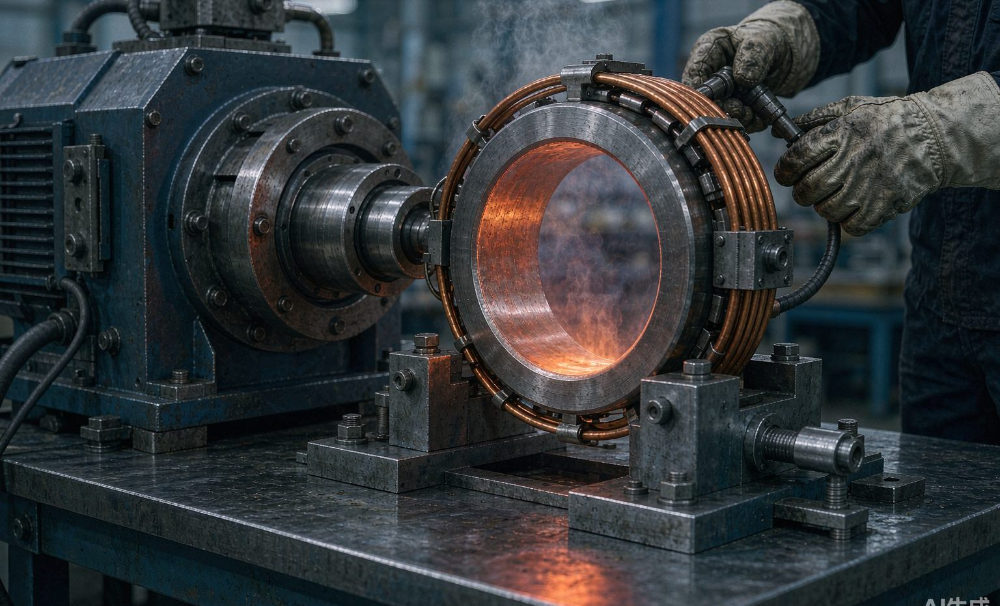
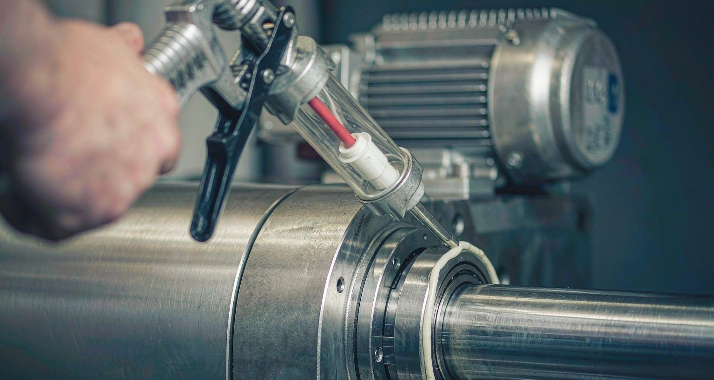
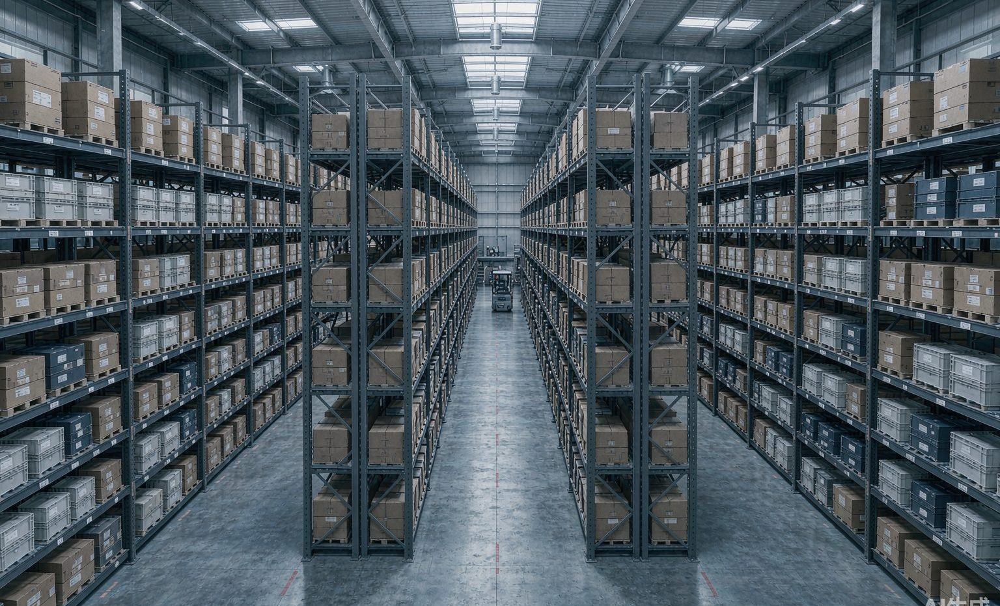

01 / SUPPLY
正品供应与备件策略
每一颗轴承可扫码追溯来源；关键件分级常备，紧急件有快速通道。
不只是卖轴承——把「装得对、用得好、坏了能修、状态能看」串起来，避免每个环节的作业偏差。
每一颗轴承可扫码追溯来源；关键件分级常备，紧急件有快速通道。

感应加热、液压工具、对中、扭矩控制——每一步留记录、可验收。

润滑点盘点、选脂、用量与周期、自动润滑方案——避免多加、少加、错加。

振动、温度、噪声采集 → 诊断 → 报告 → 复检闭环，让故障提前处理。

智能货柜、扫码领用、自动记录、补货提醒——把备件资金占用降到合理水位。
选型、安装、润滑、监测专项培训与现场实操——把方法留在您的团队里。